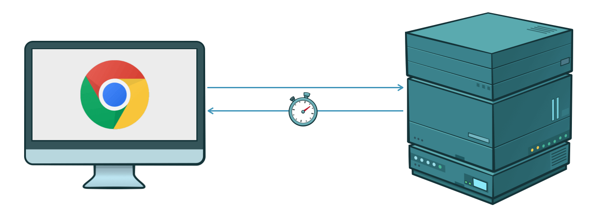

1. Server Timing
Server Timing is a new W3C feature that allows you to add some metrics about the request handling to the response. The following image shows how such information would be rendered in the developer console of chrome:

The feature is very usefully when you develop a client that uses HTTP calls to communicate with the server. In this case the client sends a http request to the server and receives a http response after some time. While the server execution is a black box for the client, the "server timing" information can be structured into multiple parts like database time and total response handling, talking to third party services and others. This can help you to identify time-consuming components on the server side in a production environment.

1.1. Server Timing API
Rico provides a managed component that can easily be injected in any Spring or JavaEE bean.
This component is defined by the dev.rico.server.timing.ServerTiming interface and lives in the request scope.
By injecting the component you can easily create metrics in your server that will be added automatically to the http response.
The metric name is defined through the dev.rico.server.timing.ServerTiming interface.
The following code snippet shows the basic usage of the API:
final ServerTiming timing = ... // will be injected
final ServerTimer dbTimer = timing.start("DB-Operation");
//Do some work on the database
dbTimer.stop();The given sample creates a timer with the given name “DB-Operation” and will record the duration until the stop() method is called.
You can see the duration of the “DB-Operation” directly in the developer console of your chrome browser.
Let’s have a look how you can use this feature with a simple REST endpoint in JakartaEE:
@Path("/api/delete")
public class MyEndpoint {
@Inject
private ServerTiming timing;
@Inject
private Database dabase;
@GET
public void clearAllData() {
final ServerTimer timer1 = timing.start("delete-users", "Deletes all users in the DB");
database.deleteAllUsers();
timer1.stop();
final ServerTimer timer2 = timing.start("delete-items", "Deletes all items in the DB");
database.deleteAllItems();
timer2.stop();
}
}The Rico usage in the Spring version is identical:
@RestController
public class MyEndpoint {
@Autowired
private ServerTiming timing;
@Autowired
private Database dabase;
@RequestMapping("/api/delete")
public void clearAllData() {
final ServerTimer timer1 = timing.start("delete-users", "Deletes all users in the DB");
database.deleteAllUsers();
timer1.stop();
final ServerTimer timer2 = timing.start("delete-items", "Deletes all items in the DB");
database.deleteAllItems();
timer2.stop();
}
}In the example an endpoint /api/delete is doing 2 calls against a database.
For both calls a ServerTimer instance is created to measure the duration of the calls.
In accordance with the “server timing” specification Rico supports a description next to a name for a timing entry.
Once a client calls the endpoint, the http response will automatically contain the timing information for “deleteAllUsers” and “deleteAllItems”.
1.2. Additional JakartaEE integration
Instead of injecting a dev.rico.server.timing.ServerTiming instance and creating metrics by hand you can add the dev.rico.server.javaee.timing.Timing annotation to each method of a managed bean to record the method call duration.
The following code shows how you can easily record the duration of an HTTP endpoint by doing so:
@Path("/api/delete")
public class MyEndpoint {
@GET
@Timing("item-count-metric")
public int getItemCount() {
final int count = ... // do some calculations;
return count;
}
}Like the basic API the Timing annotation supports a name and an optional description for the metric.